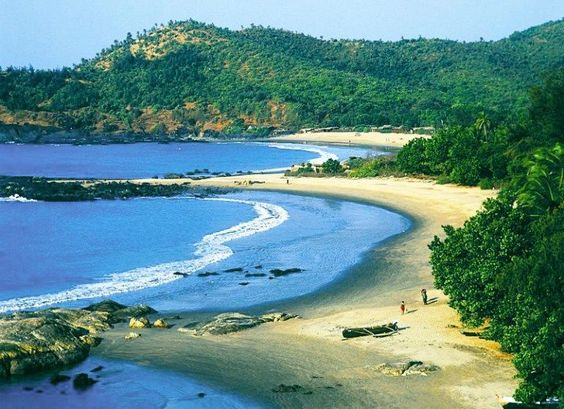
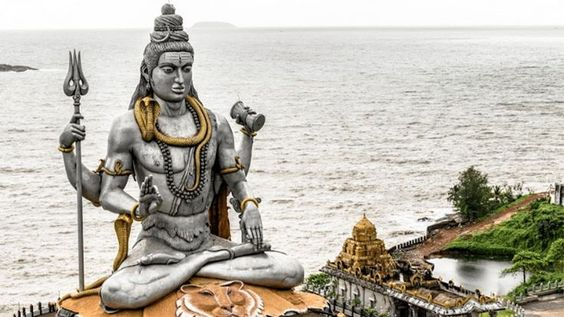
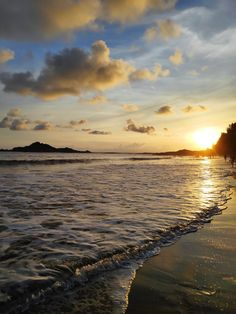
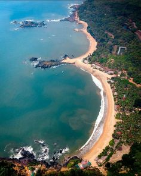
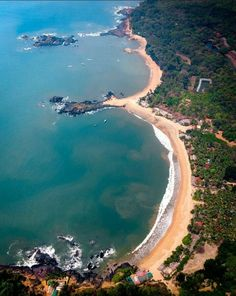

GOKARNA
| Home Page | Culture and Traditions | Places to Visit | Gallery | Contact Us |
Escape the city and embrace the waves of Gokarna
| Gokarna is a town on the Arabian Sea, in the southwestern Indian state of Karnataka. A popular pilgrimage destination for Hindus, it’s known for sacred sites like Mahabaleshwar Temple, which has a shrine dedicated to the deity Shiva. Nearby, Koti Teertha is a temple tank where devotees wash in the holy waters. The town is also home to beaches such as palm-lined Gokarna, in the center, plus Kudle and Om farther south. |  |
|
|
 |
Known for its idyllic beaches and pristine waters, Gokarna is a favorite among travelers who seek a peaceful vacation. It is the more laid-back and less commercialized version of Goa. Other than the famous Om beach, it has Kudle beach and the more secluded Half Moon and Paradise beach.

 
